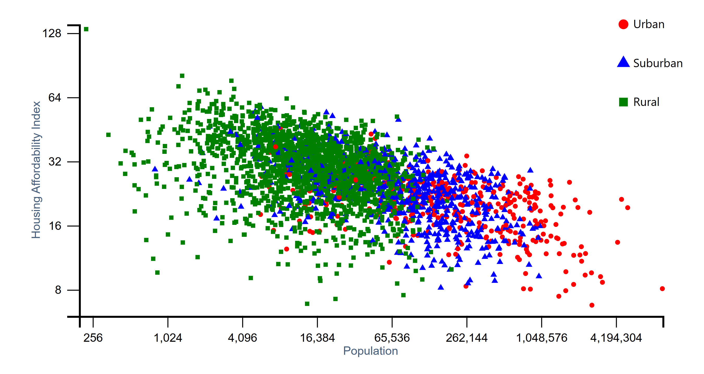

Ben Lu, Ben Zhang, Qianyong Zhang
Project-long Course Project as part of COSI 116A: Information Visualization, taught by Prof. Dylan Cashman, Brandeis University.
We choose housing inequality because we feel like this topic is important to the majority of people and it is worsening at a fast pace, hence it is essential to visualize and examine this topic and hopefully get some valuable insights. Meanwhile, this dataset is also a good starting point to practice visualization skills because as we search the internet for the previous exercise, there exists abundant data sources and existing visualization ideas for this topic.
The purpose of this team's formation is to examine and visualize the issue of housing inequality in the US, with a particular focus on exploring potential disparities in affordability between urban, suburban and rural communities, as well as examining regional variations in different states in America. This project is intended to be mainly used by the general public to inform them about the topic, with a broader goal of informing policymakers, urban planners, and social organizations working towards addressing housing affordability challenges. The general public will be expecting straightforward and easy-to-understand visualizations of the disparity of affordability and potential findings. Meanwhile, the policymakers, urban planners will be expecting to see clear trends or important findings of this problem from the visualizations on a more zoom-in level.
The project includes two key visualizations: a U.S. map and a scatterplot, both created using D3.js. The project includes two key visualizations: a U.S. map and a scatterplot, both created using D3.js. The U.S. map visualizes housing affordability at the county level using a sequential red color scheme to indicate varying affordability levels. Counties with missing data are marked in grey for clarity. The scatterplot encodes affordability and population, using the x-axis for population, the y-axis for housing affordability index, and distinct shapes (circle, triangle, square) to differentiate area types: urban, suburban, and rural.
Interactions, such as brushing and linking, allow users to highlight selected data points on both visualizations simultaneously. Zoom functionality on the map further enhances user experience by enabling exploration of specific regions.
Final Visualization Screenshots
Linked Presentation Slides
https://docs.google.com/presentation/d/1csHt2YlLi2M3oCcygLNsrSwXPSjvIF7Y3qPR58ABtr8/edit?usp=sharing
The data sources for this project are well-documented and aligned with the problem statement. The primary dataset includes housing affordability index, population, median income, and area type classifications for various U.S. counties. The FIPS codes are used to uniquely identify counties and link them to the geographic data provided in counties-albers-10m.json. The housing data was cleaned using Python librarie pandas.
Key processing tasks includes:
1.Padding FIPS codes to ensure consistency.
2.Combining affordability data with population and area type information to create a unified dataset.
3.Exporting cleaned data in both CSV (final_dataset.csv) and JSON formats for seamless integration into D3 visualizations.
These steps ensure that the data is clean, reproducible, and appropriate for the project goals. The preprocessing workflow is explicitly documented in the data-process.ipynb file.
The task analysis for this project focuses on enabling users to explore housing affordability patterns across different U.S. regions and area classifications, such as urban, suburban, and rural areas. The tasks are structured into domain tasks, analytic tasks (low-level), search tasks (mid-level), and analyze tasks (high-level), ensuring a systematic approach to understanding the data.
The first major domain task is to compare housing affordability between different U.S. regions. At the analytic task level, the project aggregates housing affordability index data to calculate summary statistics for counties and states. This aggregation ensures that affordability patterns can be examined across regions, simplifying the process for further analysis. At the search task level, users are enabled to compare affordability visually by observing a color-coded U.S. map, where a sequential red color scheme indicates varying levels of affordability. Users can quickly identify regions with higher or lower affordability through color intensity. At the analyze task level, the map allows users to discover broader trends and patterns, such as identifying states or counties with particularly low affordability. This may prompt further investigation into possible contributing factors, such as population density or income disparities.
The second domain task focuses on comparing housing affordability across urban, suburban, and rural areas. At the analytic task level, the project filters the dataset based on area classifications, grouping the data into urban, suburban, and rural categories for analysis. At the search task level, a scatterplot visualization enables users to observe affordability differences across these categories. The scatterplot encodes area types using distinct shapes: circles represent urban areas, triangles represent suburban areas, and squares represent rural areas. These shapes, combined with population data on the x-axis and affordability index on the y-axis, allow users to identify patterns across classifications. At the analyze task level, users can discover relationships and trends, such as whether urban areas tend to have lower affordability or whether rural areas exhibit significant variability. By interacting with the scatterplot and observing the linked map, users can further explore relationships between affordability, population size, and regional location.
The design process for this project involved iterative development, starting with initial sketches and progressing through several refinements. Early designs featured a simple U.S. map and scatterplot, interactivity is incorporated later.
The color scheme for the map uses sequential red hues to represent affordability levels, with grey used for missing data, ensuring clarity and accessibility. The scatterplot employs distinct shapes—circles, triangles, and squares—to encode urban, suburban, and rural classifications.
Interactivity was implemented to enhance the user experience. Brushing and linking allows users to select data points on one visualization and see corresponding highlights on the other, fostering dynamic exploration. When the user hover the mouse over a data point, the interactive map displays the detailed data. In addition, zoom functionality was added to the map to allow detailed examination of specific regions. Learning from feedback from usability testing, we recognizes the need for clearer legends and improved interactivity, leading to refinements such as aligning legends and improving visual transitions during brushing.
The design choices are grounded in visualization principles taught in class. This ensures that the final product effectively communicates insights while maintaining usability and accessibility.
Sketches to justify final visualization
This project successfully visualizes housing affordability trends across the United States. Our project provides valuable insights into regional and demographic disparities. The final deliverables include an interactive U.S. map, a scatterplot, and integrated brushing and linking features, allowing users to dynamically explore relationships between affordability, population, and area type.
Areas for improvement include enhancing the precision of the zoom feature for the map, allowing users to explore specific regions in detail. Future work could incorporate historical data to analyze trends over time, providing a richer understanding of changes in housing affordability. Overall, this project demonstrates a strong integration of data analysis, design principles, and interactivity to address a critical real-world problem.
Library used:
D3.js by Mike Bostock
TopoJSON for handling geospatial data
Tools:
Python (pandas, json) for preprocessing
Excel for initial data inspection